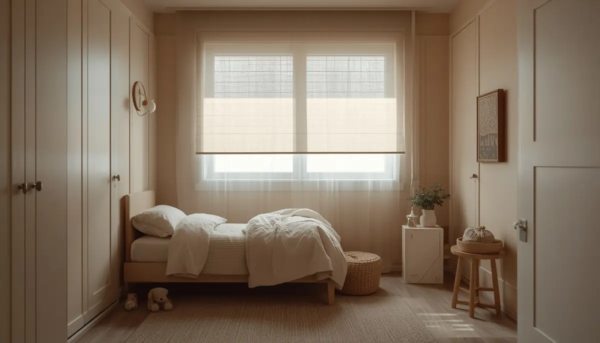

Trastornos del sueño: claves para un descanso reparador
Acompañar el sueño infantil representa uno de los retos más intensos y delicados en la crianza. Las noches en vela, las dificultades para conciliar el sueño o los despertares sobresaltados impactan profundamente en el equilibrio familiar. Más allá de fórmulas mágicas o métodos estrictos, el objetivo es comprender el ritmo biológico del menor y construir rutinas seguras que faciliten un descanso profundo y reparador. He reunido aquí una guía serena para abordar el insomnio, entender los despertares y gestionar los terrores nocturnos con calma. Pincha en cada tarjeta para profundizar en cada tema.
Comprender las noches difíciles sin agobios
Transformar el agotamiento acumulado y la preocupación inicial en una actitud de paciencia y comprensión hacia el desarrollo del sueño infantil.

¿Cómo madura el sueño en la infancia?
Entender las fases del sueño, los ciclos nocturnos y por qué los despertares frecuentes forman parte natural del crecimiento cerebral.

Reconocer el cansancio antes de la fatiga
Identificar los indicios sutiles de sobreestimulación para iniciar la transición al descanso en el momento óptimo y evitar crisis nocturnas.

Preparar el dormitorio y la desconexión
Pautas sencillas para regular la luz, la temperatura, eliminar pantallas y crear un refugio tranquilo propicio para el sueño.

El arte de la rutina nocturna predecible
Diseñar una secuencia de hábitos vespertinos calmantes que avisen al cerebro del menor que la hora de dormir se aproxima.

Afrontar terrores nocturnos y despertares
Estrategias respetuosas para distinguir entre pesadillas y terrores nocturnos, ofreciendo un refugio seguro sin generar mayor ansiedad.

Conciliar el sueño con los horarios escolares
Adaptar las transiciones de las siestas y los horarios diurnos para evitar la fatiga acumulada durante la jornada lectiva.
Cuidar el equilibrio emocional de la familia
Estrategias de apoyo mutuo y gestión del estrés parental ante las etapas de insomnio prolongado, priorizando la salud mental en el hogar.